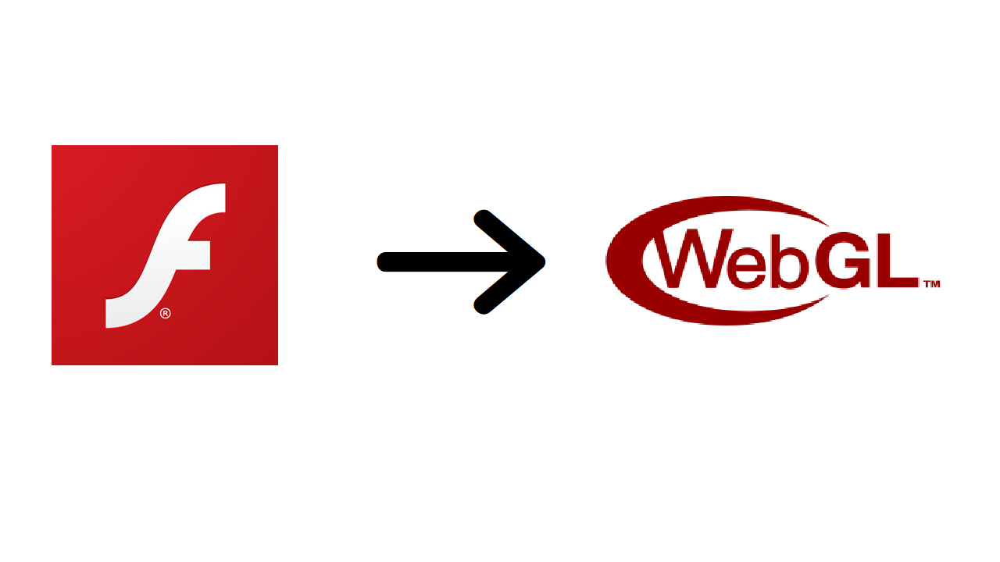
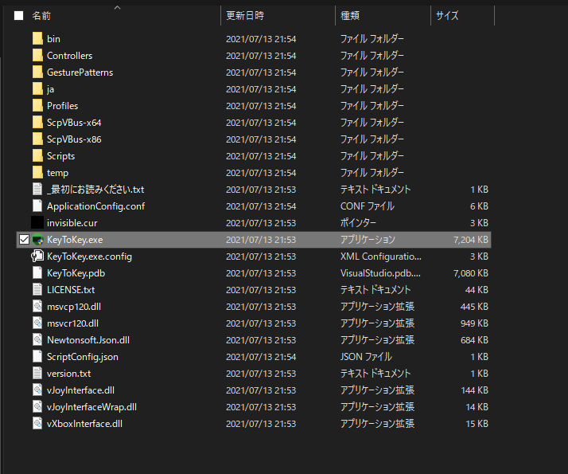
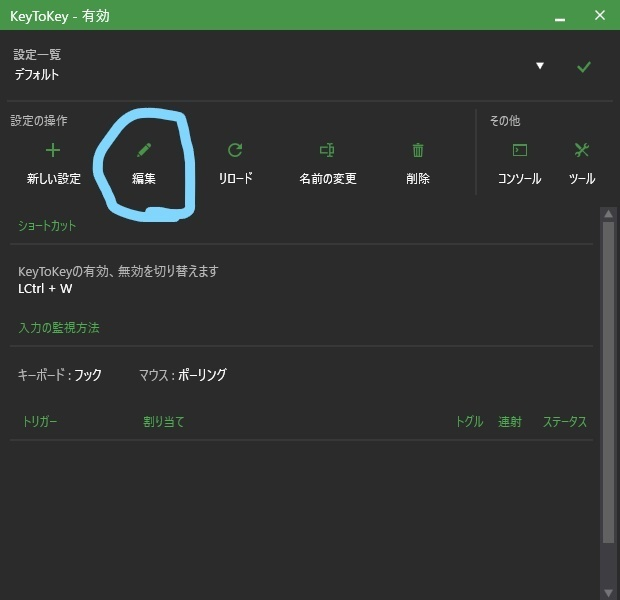
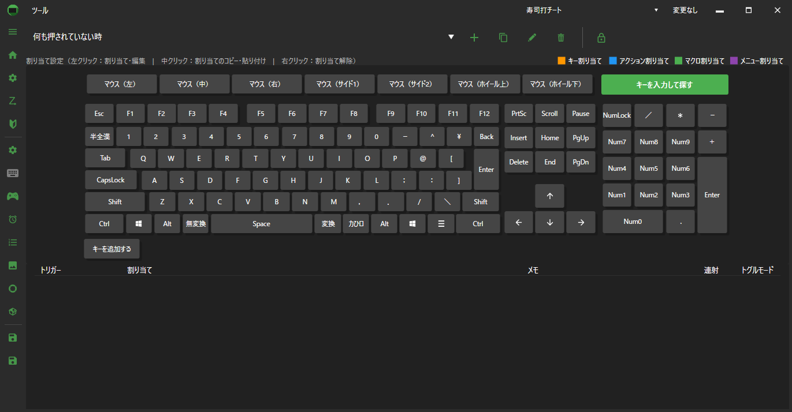
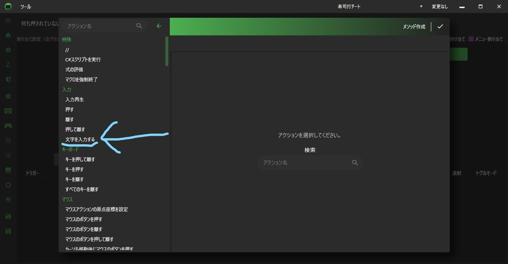
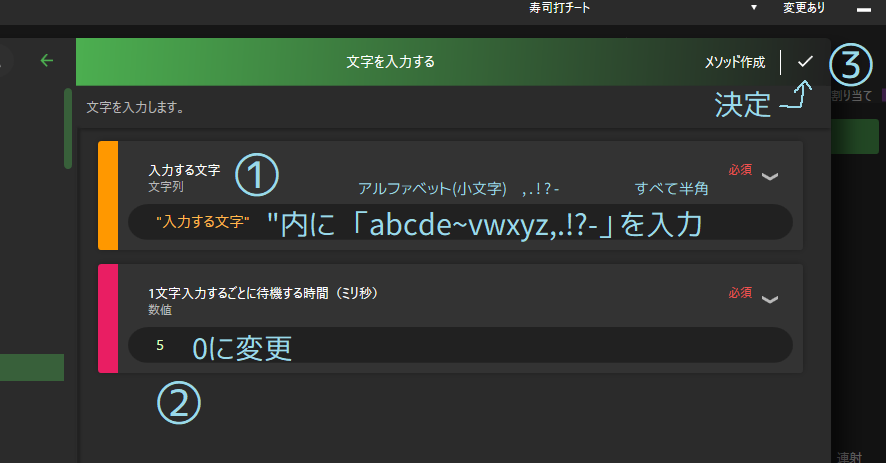
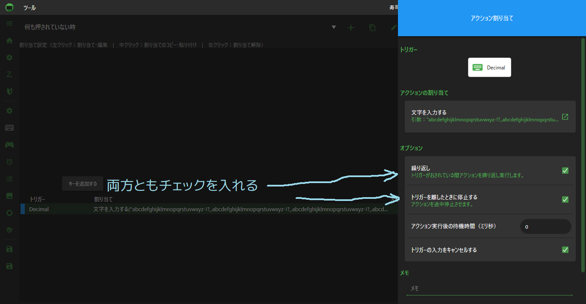
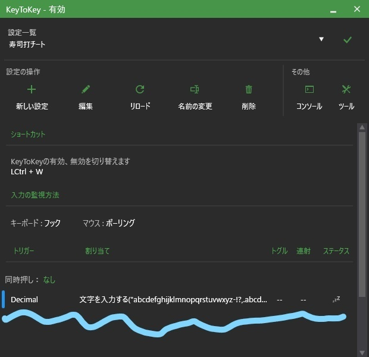

この記事は私のSeesaaブログから移行したものです。情報が古い可能性があります。
最近、「寿司打」という名タイピングゲームでチートを使って超高速にタイピングをする動画を見つけました。
今回は寿司打で誰でもかんたんにチートを使う方法を解説していきます。
冒頭でも出てきた「寿司打」とは、昔からあるWeb上で自分のタイピング速度を測ることができるフラッシュゲームです。
寿司屋の食べ放題で、3000円、5000円、10000円の3つのコースから選び、どれだけ多くの寿司を食べることができるか（どれだけ早くタイピングできるか）測るゲームとなっています。
しかし、Adobeが2020年12月31日でフラッシュのサービスを終了したことを受け、寿司打もフラッシュ版から「WebGL」版へと移行されました。
現在はWebGL版のみ、遊ぶことができます。
寿司打で自動で入力される仕組みを説明します。
仕組みはかんたんで、このあと説明するソフトでキーボードの 一つのキー を押すと、AからZ、！？と , . の計29字が入力されるように設定します。そのキーを押し続けると、29字が連続で入力され続けるので、地道に寿司打で入力されていきます。
なので、結果を見るとものすごい量のミスタイプになります。
つまり、29字の中で正解は1文字だけなので、残りの28字はミスタイプとしてカウントされてしまいます。
チートというより、ハッキングでいう、いわゆる「総当たり攻撃」と似たものになるのだと思います。
チートを試すために一つソフトをダウンロードします。
それは、「KeyToKey」というソフトです。このソフトさえあれば試すことができます。
ダウンロードはこちらからダウンロードしたら、Zipフォルダを解凍し、中にあるこの「KeyToKey.exe」を開きます。
開くと、このようなタブが表示されます。
キーの割り当てをするので、画面上部の編集をクリックします。
すると、画面上にキーボードが表示されます。
ここで、先程説明した 一つのキー を設定します。
本番で押し続けるキーとなります。（別にBackSpaceキー等でなければ何でも構いません。）
私はテンキーの「 . 」キーにしました。（右下のテンキーのEnterの左にあるキーです。」
希望のキーを左クリックし、「アクションを割り当てる」をクリックします。
するとこのような画面が出るので、左の「文字を入力する」、を選択します。
ここの設定が一番の要です。
ここで、キーに29字を割り当てます。
まず、①の欄に、「入力する文字」のところに、
「abccdefghijklmnopqrstuvwxyz,.!?-」
を 繰り返し 入力します。
ここで注意！
入力する部分に繰り返し入力しないと、早く入力されません。それではチートの意味がなくなってしまいます。
繰り返し入力するというのは、
「abccdefghijklmnopqrstuvwxyz,.!?-」
という文字列を繰り返し、5回ほど入力する、という意味です。（わかりにくくてすみません）
入力できたら右上の決定をクリックして保存しましょう。
決定すると、このような画面が表示されます。
ここにチェックを入れないと、キーを連打しなければいけないので、ちゃんとチェックを入れましょう。
チェックを入れたら閉じましょう。
キーボードの画面で、左下の上のフロッピーディスクのアイコンをクリックして再度保存することを忘れずに！
保存したら、キーボードの画面を閉じていただいて構いません。
一番最初のこの画面にこのような表示がされていれば一通り設定完了です。
それでは試して見ましょう。
では、準備も整ったところで、実際に試してみましょう。
寿司打はこちらからいつもどおりプレイするように、プレイ画面で設定したキーを長押ししてみてください
超絶入力が速いでしょう！プレイ動画をこちらに用意しました。
この動画ほどまで行かずとも、相当速いと思います。
今回は、寿司打でチートを使う方法を紹介しました。
この記事でご満足いただけたら非常に幸いです。
寿司打でチートを使うのもいいですが、自分のタイピングの腕を上げて自分の力で挑戦するほうが楽しいです。
ありがとうございました。